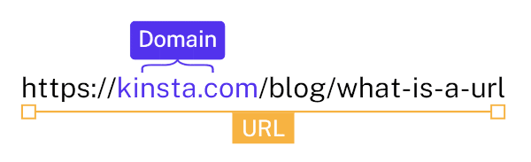

No início das aulas foi ensinado sobre Domínios e Hospedagens.
Onde por exemplo, nos informa que a HTML e as CSS só irão funcionar se estivere hospedadas em um servidor e eu tiver um URL final para passar. O URL é a ponte entre o servidor e a máquina.
Para que um acesso funcione corretamente, precisamos de um Domínio
.
Domínio esse que pode ser o github.io por exemplo.
Precisamos também de um servidor para que o site funcione e guardemos todos os arquivos. No caso, uma Hospedagem.
Como essa acima, por exemplo.
Na hora de escolher um domínio, precisamos de um Nome único e pagar por um TOP LEVEL DOMAIN ou um GENERIC TOP LEVEL DOMAIN. (TLD OU GTLD).
Como um desses da imagem acima, por exemplo.
Foi explicado também como ler um URL!
https = hyper text transfer protocol secure ou protocólo de transferência de hipertexto seguro.
Onde temos o www como subdominio,
as vezes o domínio aparecendo (.github por exemplo),
a TLD/CCTLD logo em seguida (.com/.br/.uk)
e as vezes o caminho a mostra (/login por exemplo)

Bom, é errado falar que programamos em HTML e CSS. HTML e CSS são linguagens, porém não de programação. (Como JavaS, Python, Ruby, Swift...)
O Correto é dizer: "Eu desenvolvo sites em HTML"
A Linguagem de Hyper Text Markup Language ou HTML, é uma linguagem de CONTEÚDO
Conteúdo pode ser: Texto, imagem, video, tabela, listas..
CSS são atrativos visuais
Foco em Design, cores, sombras, tamanho, posicionamento..
Existe a linguagem JavaScript para interações, menus, animações, popups, validações e afins.
Um site completo é contituido por HTML, CSS E JAVASCRIPT
Sempre bom se atentar a Hierarquia dos Titulos
O h1 pode ser utilizado como chamativa/cabeçalho.
Mas isso não quer dizer que não possamos repetir o h1 outras vezes durante o texto.
Sim, podemos.
h2 para titulos secundarios e assim por diante até o h6, que é o limite
assim como estou escrevendo aqui, utilizei bastante paragrafos com <p>
A Utilização de favicons achei bem interessante,
isso da bastante do charme de um site profissional e
até mesmo para quando a ideia de site se tornar um APP
Sites para achar e/ou criar favs, anotei o:

Foi dito também sobre a parte de Front End, Back end e Full Stack
Front-end é o desenvolvedor especializado em tecnologias voltadas para a parte do cliente.
Back-end é o desenvolvedor especializado nos códigos de tecnologias voltadas para o servidor
Full-Stack é o desenvolvedor especializado nas duas áreas.
O Programa que atualmente estou usando é o Visual Studio Code
Eu ainda não tive vontade de fazer umas marcações,
mas vou por aqui só pra mostrar que sei.
E No caso de criação de códigos fontes e eu queira quebrar o texto, posso utilizar a tag PRE. que o codigo fonte ficará exatamente como esse parágrafo aqui
Posso usar Blockquote para citar alguem também dentro do meu codigo de html. mas não tenho ninguém pra citar no momento.
Oi, eu sou Matheus